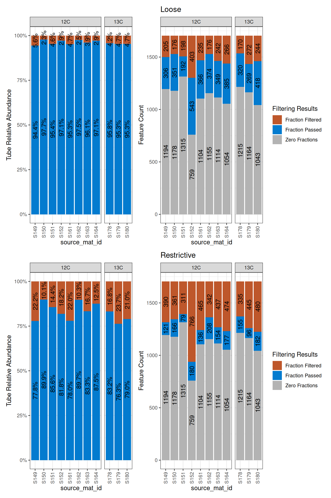

Background
After a qsip_data object is built and validated, the first step in the analysis is to filter the features using run_feature_filter(). This is done to narrow down the sources for a specific comparison, and remove features that are not useful for the analysis.
Filtering steps
Filtering has three sequential steps.
- identify relevant unlabeled and labeled
source_mat_idvalues for a specific comparison - score features considered as “present” in a source by using fraction count thresholds
- remove features that are not “present” in enough sources
Each step is detailed in the following sections.
Step 1 - define the sources for a comparison
The first step in filtering is to identify the relevant source_mat_id values for a specific comparison. The run_feature_filter() arguments most important for this step are unlabeled_source_mat_ids and labeled_source_mat_ids. These are vectors of source_mat_id values that are used to filter the features. These can be explicitly stated (e.g. unlabeled_source_mat_ids = c("source1", "source2")), or they can be identified by using some key terms that will identify all sources satisfying that criteria (e.g. get_all_by_isotope(qsip_object, "12C") or get_all_by_isotope(qsip_object, "unlabeled")).
There are internal validations for this step to make sure the sources provided to a given argument make sense with the isotope designation in the source data. For example, if you try to give a 13C source to the unlabeled_source_mat_ids then there will be an error. If you try sources with a mixture of heavy isotopes (e.g. 13C and 15N) to the labeled_source_mat_ids then there will be an error. This can happen either explicitly by providing the wrong source_mat_id values, or if you have a mixture and choose “labeled” for labeled_source_mat_ids. Having a mixture of unlabeled source isotopes (e.g. 12C and 14N), however, is allowed and will not give an error.
The group argument is optional (but recommended) and provides a place for a description of that particular comparison (e.g. group = "7 day drought treatment").
Step 2 - score features as “present” in a source
(In this section, “fraction” and “sample” mean the same thing and are used interchangeably)
Simplistically, a feature is considered present in a fraction/sample if there are counts for it. Features present in only a few fractions, however, can lead to inaccurate estimates of the weighted average density (WAD) and should therefore be removed. For example, if a source has 20 sequenced fractions (samples), each with their own read depths, a feature appearing in only one sample may be because that sample happened to have the deepest sequencing. Therefore, it wouldn’t be expected to be an accurate representation of the true WAD values. Accordingly, a feature should be present in at least a few fractions (let’s say 3) to have a more trustworthy WAD value.
The minimum fraction count can be defined differently for the unlabeled and labeled samples using the min_unlabeled_fractions and min_labeled_fractions arguments, respectively. The function uses these values to define a feature as “present” in a source if it is found in at least that many samples (fractions).
Step 3 - remove features that are not present in enough sources
The results of the last filtering step are used in this step to make a final call for a feature_id in that comparison. If a feature is found in at least the number of sources defined in min_unlabeled_sources and min_labeled_sources, then it will survive the filtering step and move on to resampling/EAF calculations.
Note: When a
qsip_dataobject is first created, tube relative abundances are calculated for all features together — this normalization step requires all features to be present at once. After that point, however, each feature’s WAD calculation and subsequent EAF values are computed entirely independently. Filtering out one feature has no effect on the results of any other. The filtered object carries the same WAD values as the original; filtering simply determines which features proceed to resampling and EAF calculations.
Filtering example
As detailed in the main vignette, we can use the get_comparison_groups() function to see the available comparisons (this is just a prediction though!). We can run a few with the test dataset (example_qsip_object) and see how the text result changes to allow less through as we get more restrictive.
df = get_comparison_groups(example_qsip_object,
group = "Moisture")| Moisture | 12C | 13C |
|---|---|---|
| Normal | S149, S150, S151, S152 | S178, S179, S180 |
| Drought | S161, S162, S163, S164 | S200, S201, S202, S203 |
Example filtering using all unlabeled and only the “Normal” labeled sources is shown below using two stringencies, “loose” and “restrictive”.
loose <- run_feature_filter(example_qsip_object,
unlabeled_source_mat_ids = get_all_by_isotope(example_qsip_object, "12C"),
labeled_source_mat_ids = c("S178", "S179", "S180"),
min_unlabeled_sources = 2,
min_labeled_sources = 2,
min_unlabeled_fractions = 2,
min_labeled_fractions = 2,
quiet = TRUE
)
restrictive <- run_feature_filter(example_qsip_object,
unlabeled_source_mat_ids = get_all_by_isotope(example_qsip_object, "12C"),
labeled_source_mat_ids = c("S178", "S179", "S180"),
min_unlabeled_sources = 6,
min_labeled_sources = 3,
min_unlabeled_fractions = 6,
min_labeled_fractions = 6,
quiet = TRUE
)Here, only 64 features pass the more restrictive criteria, but we get 257 by relaxing the criteria a little bit. By default, run_feature_filter() prints a verbose summary of each filtering step — use quiet = TRUE to suppress this.
Note: Relaxing the criteria too much can lead to errors later during resampling. An alternative approach is to set all
min_*parameters to1(effectively no upfront filtering) and useallow_failures = TRUEin the resampling step to handle features that fail there instead. This can be a flexible way to let the data determine which features are usable, though the statistical implications of this approach have not been thoroughly evaluated. See the resampling vignette for more detail.
Inspecting the filter results
A tabular view of the filtering results can be made with the get_filter_results() function. The first column is the step of the filtering process. The Zero Fractions/Sources and Source/Fraction Filtered rows can be confusing/misleading because they may not be reflected in the actual filtering results. This is because you may have features missing entirely from one source, but if you are only requiring it to be found in 3 out of 4 sources then it will survive the filtering. The Fraction/Source Passed rows are more informative, and Table 2 only shows these rows. The numbers shown in the run_feature_filter() output include the union of “Fraction Passed”, and the intersection of “Source Passed” is the final feature count after filtering.
| filter_step | features_unlabeled | features_labeled | union | intersect | unlabeled_only | labeled_only |
|---|---|---|---|---|---|---|
| Fraction Passed | 780 | 497 | 870 | 407 | 373 | 90 |
| Source Passed | 535 | 308 | 586 | 257 | 278 | 51 |
| filter_step | features_unlabeled | features_labeled | union | intersect | unlabeled_only | labeled_only |
|---|---|---|---|---|---|---|
| Fraction Passed | 299 | 209 | 346 | 162 | 137 | 47 |
| Source Passed | 103 | 82 | 121 | 64 | 39 | 18 |
By passing type = "feature_ids" to get_filter_results(), you can retrieve the actual feature IDs that passed or failed at each step rather than counts — useful for identifying specific features to investigate further.
After filtering, get_object_summary() gives a quick structured view of the object state, confirming the feature count and that the filtering step has been completed.
get_object_summary(restrictive)
#> # A tibble: 6 × 2
#> metric none
#> <chr> <chr>
#> 1 feature_id_count 64 of 2030
#> 2 sample_id_count 284
#> 3 filtered TRUE
#> 4 resampled FALSE
#> 5 eaf FALSE
#> 6 growth FALSEFollowing the fate of a certain feature
You can see the “fate” of a specific feature to see why it was or wasn’t included in the resulting object. First, we can get a few feature_ids that had different fates between the different filtering conditions.
diff_features = setdiff(get_feature_ids(loose, filtered = TRUE), get_feature_ids(restrictive, filtered = TRUE))ASV_100 is the first on the list that was present in the loose filtering, but remove in the restrictive filtering. We can use the get_filtered_feature_summary() function to look at the filtering parameters affected the fate of ASV_100.
ASV_100_restrictive = get_filtered_feature_summary(restrictive, feature_id = "ASV_100")
ASV_100_loose = get_filtered_feature_summary(loose, feature_id = "ASV_100")The get_filtered_feature_summary() function returns a list with information that summarize the filtering steps for a specific feature.
-
$fraction_filter_summaryis the sample (fraction) count results -
$source_filter_summaryis the source count results -
$retainedis the final boolean call of whether the feature was retained or not
As expected (because we picked ASV_100 as an example of differential filtering), the retained slot is FALSE for the restrictive filtering and TRUE for the loose filtering.
ASV_100_loose$retained
#> [1] TRUE
ASV_100_restrictive$retained
#> [1] FALSEWe can look at the fraction count summary for the feature in the two filtering conditions in the $fraction_filter_summary slot. This code combines the two sets of results, but just the last two columns are of importance.
| source_mat_id | type | n_fractions | fraction_call_restrictive | fraction_call_loose |
|---|---|---|---|---|
| S149 | unlabeled | 3 | Fraction Filtered | Fraction Passed |
| S150 | unlabeled | 10 | Fraction Passed | Fraction Passed |
| S151 | unlabeled | 7 | Fraction Passed | Fraction Passed |
| S152 | unlabeled | 6 | Fraction Passed | Fraction Passed |
| S161 | unlabeled | 7 | Fraction Passed | Fraction Passed |
| S162 | unlabeled | 13 | Fraction Passed | Fraction Passed |
| S163 | unlabeled | 6 | Fraction Passed | Fraction Passed |
| S164 | unlabeled | 9 | Fraction Passed | Fraction Passed |
| S178 | labeled | 4 | Fraction Filtered | Fraction Passed |
| S179 | labeled | 5 | Fraction Filtered | Fraction Passed |
| S180 | labeled | 7 | Fraction Passed | Fraction Passed |
Above, you can see that in the unlabeled samples, only S149 had a difference between restrictive and loose, but 2 of the 3 labeled samples had differences and showed as “Fraction Filtered”.
Therefore, the sample (fraction) count filtering came to different conclusions…
| feature_id | type | n_sources_restrictive | source_call_restrictive | n_sources_loose | source_call_loose |
|---|---|---|---|---|---|
| ASV_100 | labeled | 1 | Source Filtered | 3 | Source Passed |
| ASV_100 | unlabeled | 7 | Source Passed | 8 | Source Passed |
Plotting the results
Although there is a dramatic difference in the number of retained features between the two conditions, we can see how prevalent the features that are different are by plotting the fraction count distributions.
a = plot_filter_results(loose) + ggtitle("Loose")
b = plot_filter_results(restrictive) + ggtitle("Restrictive")
a / b
In the top plots, the blue is much larger than it is in the bottom plots, indicating more (obviously) made it through the loose filtering. But, even though there are 4x more features in the loose dataset, it is only about a 15-20% increase in terms of the abundance of features in the original dataset. Also notice the gray bars will not change with different filtering because they are absent from those sources.
Conclusion
Filtering determines which features carry forward into the analysis. The thresholds you choose here directly affect both the reliability of downstream WAD estimates and the number of features available for EAF calculations — stricter filtering produces fewer but more trustworthy results. Once you are satisfied with your filtered object, the next step is resampling, where bootstrap resampling of WAD values is used to estimate confidence intervals for each feature.